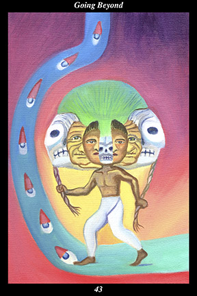

 | IMAGEA male warrior, wearing an elaborate headdress of masks, walks the road of stars. The innermost mask is that of a skeleton, from which emerge masks of a young man, an old man, and another skeleton. Crowned with a crest of precious feathers of the quetzal bird, the entire headdress is bound together by the rope the warrior holds in his hands. The stars are drawn as the eyes of night in order to show that the ancestors watch over us even as we dream. |
INTERPRETATION
This hexagram depicts the will to cross every threshold. The male warrior symbolizes the masculine creative force, who tests and trains human nature in order to increase its versatility and fortitude. The road of stars symbolizes the spirit’s journey through the universe of lifetimes. The headdress of masks symbolizes the great cycle of metamorphosis passing from death to birth, through youth, old age, and back again to death. The crest of quetzal feathers symbolizes the sacred nature of the spirit warrior’s metamorphosis. The rope tying the headdress together symbolizes the thread of immortal awareness running through the eternity of lifetimes. The warrior holding the ends of the rope means that it is the present lifetime which knots the rope of eternity together. That the stars shine in the darkness like the ancestors’ watchful guidance means that you follow in the footsteps of other indomitable spirits. Taken together, these symbols mean that you move through lifetimes with practiced ease, accomplishing each lifetime’s objective with unstudied grace.
ACTION
The masculine half of the spirit warrior follows the road of transcendence past every destination. By challenging ourselves to better embody the characteristics of outer flexibility and inner strength, we neither seek to control externals nor do we allow ourselves to be controlled by externals: by denying externals the power to influence our reactions and feelings, we transform that power into spiritual freedom and autonomy. In this sense, we stop our attention from leaking, accumulate its power, and then convert it into the spiritual freedom to move easily between diverse activities and the spiritual autonomy to remain unmoved by gain or loss. When we can be neither distracted nor unnerved by externals, then we are neither lead forward by longings nor pushed backward by disappointments—by keeping attention focused on the present moment of attention itself, in other words, we prevent our actions and emotions from being influenced by either encouragement or discouragement from the outside. Adapting to circumstances without being possessed by them, unmoved by circumstances without losing affection for them—such is the path of transcendence the spirit warrior walks in order to bring
benefit to others without any thought of self. Because you act on the knowledge that circumstances are not happening to you but, rather, around you, this is a time in which all obstacles are overcome and all goals exceeded.
INTENT
Nothing can hold us back if we cultivate heartfelt curiosity about the limits of our own awareness. It is this curiosity that propels us to seek out the time-tested teachings of our spiritual ancestors and to train ourselves to extend our sphere of awareness further into the world beyond the senses. By becoming more aware of our true surroundings, we are able to perceive the unfulfilled need that everywhere continues to thwart real advancement. By not becoming self-satisfied or complacent, we continue to expand the limits of our awareness, discovering thereby the
benefit needed to fulfill the need at hand. Because you treat this world as if it were already the next, you are able to use the laws of spiritual cause-and-effect to help advance the spiritual metamorphosis of the current generation another stage.
SUMMARY
Your will power is growing stronger, take care not to place limits on your thinking. Do not be satisfied with your ambitions. Push past the goals you have in mind, begin to believe that you are capable of much more than you can imagine. Nothing is holding you back right now but your own thinking. Begin to believe that you are much more than you can imagine. You are entering a time of long-awaited success.
THE LINE CHANGES
1° The window of opportunity opens—the pivot of constructive change is in the palm of your hand. Look at the age as if for the first time and adapt the perennial message to the needs of the time. The season has arrived and the soil is prepared—yours is the role of sowing the seeds of light.
2° Without genuine affection for the unfortunate, it is impossible to feel benevolent—only uncontrived generosity and altruistic goodwill allow you to reach your full potential. Open your heart to the suffering of others. This is the way to deepen a river that is already conspicuous for its breadth.
3° When people are excitable and social by nature, they keep making the same type of mistakes over and over. Then their good-heartedness brings them back to self-awareness and a commitment to not repeating those mistakes again. Learn from such people and avoid this path of restlessness.
4° No one is more surprised than an immoral person when lightning strikes and they suddenly acquire morality. You must not give up on others just because they have not yet changed for the better—it is impossible to predict what people will become. Expect the best of everyone.
5° Perfection is a process of becoming, an evolutionary momentum directed at limitless improvement. Your will to perfect yourself makes you sincere, modest, and willing to correct your faults without any rationalization. How can you not attain your heart’s desire?
6° The window of opportunity closes—there will be no more warnings. Despite repeated chances to reform yourself, you are sinking back into self-destructive habits of thought and feeling. If you don’t undergo a change of heart now, you will initiate a long period of darkness and confusion.